上一篇美团 CatPaw 的文章发出去之后，后台收到好几条私信，说：你写了美团的 IDE，阿里那边也有一个类似的东西，你看过没有。
我当时没当回事。阿里云的通义灵码我知道，之前试过，就是个 VS Code 插件，帮你补全代码的，用着还行但也没什么特别的。
然后这两天我去翻了一下，发现通义灵码已经不叫通义灵码了。它在今年 5 月 20 号改名成了 Qoder CN，整个产品线做了一次大重构。编码的归编码，办公的归办公，终端的归终端，移动端的归移动端。四条产品线整合成一个家族，统一用 Credits 积分制。
其中面向日常办公场景的那个子产品，就叫 QoderWork CN。
我装了一下。
装完打开，界面中间写着六个字，不止聊天，搞定一切。
第一反应是，这口气不小。第二反应是，等等，这个东西好像不是给程序员用的。
它不是 IDE。
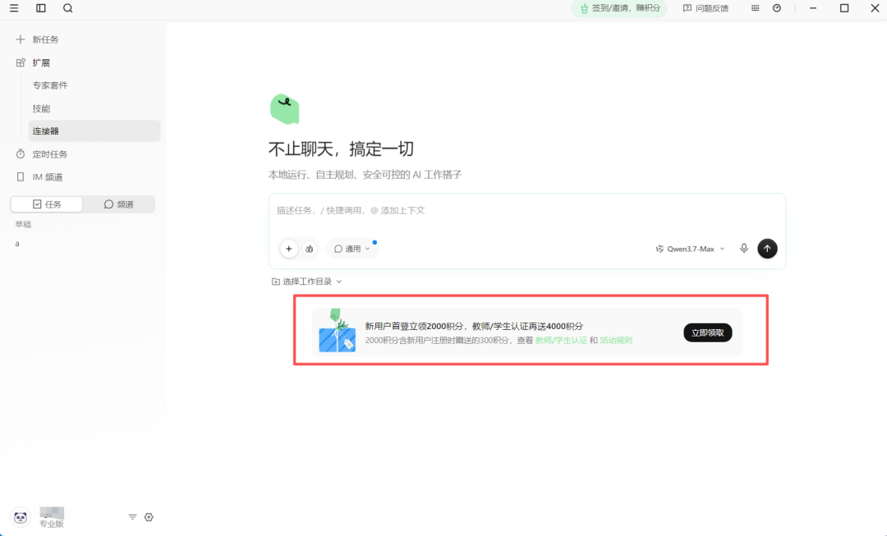
CatPaw 是一个编程工具，你拿它写代码。QoderWork 不一样，它的定位是桌面端 AI 工作搭子，注意这个词，搭子，不是助手。搭子的意思是，你说需求，它交付结果。不是帮你查个资料回答个问题，是直接帮你把活儿干了。
生成 Word 文档、做 PPT、整理下载文件夹、定时跑数据报表、把网页内容抓下来整理成表格。这些事情它可以在你的电脑上本地执行，文件不出本机。
PART 01
免费的算盘
GLM-5.2 又一次被塞进免费工具里
好了重点来了。点开模型选择器。
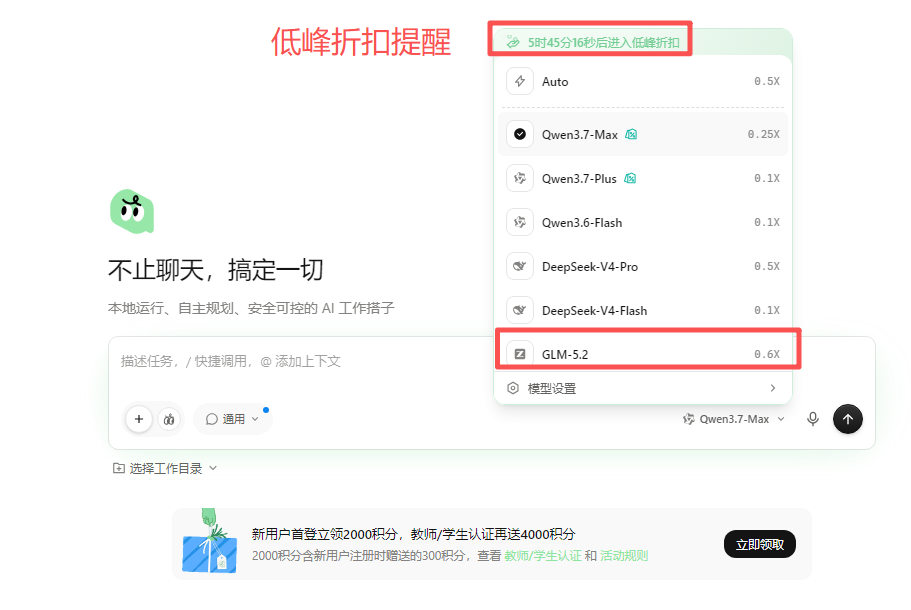
Qwen3.7-Max，0.25X。Qwen3.7-Plus，0.1X。DeepSeek-V4-Pro，0.5X。DeepSeek-V4-Flash，0.1X。
GLM-5.2，0.6X。
又是 GLM-5.2。继美团 CatPaw 之后，阿里云的 QoderWork 也把这个模型塞进来了。
这里解释一下后面那个倍率。QoderWork 用的是积分制，不同模型消耗的积分不一样。0.1X 的模型省积分，0.6X 的模型费积分。GLM-5.2 是 0.6X，在所有可选模型里消耗最高，但它确实也是里面能力最强的编程模型。关于 GLM-5.2 到底强在哪，我在上一篇美团的文章里详细写过，这里就不重复了。
那积分从哪来？
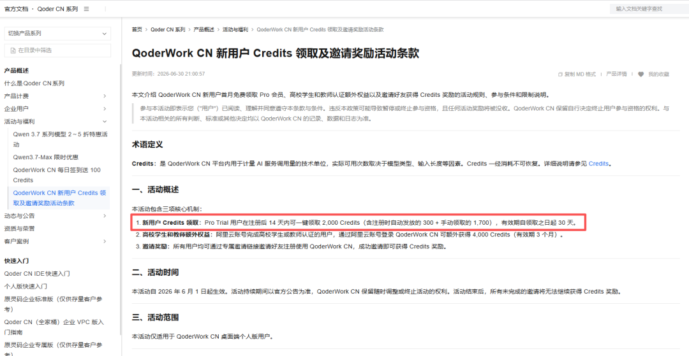
新用户注册后自动获得 300 积分，14 天内可以手动一键领取额外的 1700，加起来一共 2000 积分。学生和教师通过阿里云账号认证的话，再多送 4000。邀请好友还能赚，上限 40000。
而且新用户首月直接就是 Pro 专业版，不用付钱。Pro 正常价格是每月 59 块。
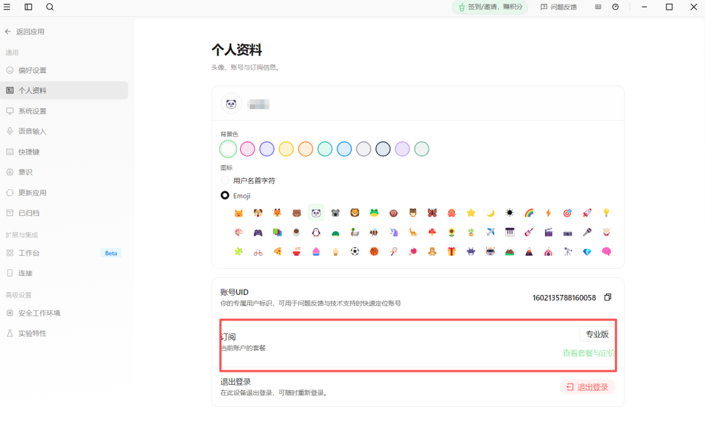
说实话 59 块一个月在 AI 工具里不算贵。Cursor 每月 20 美元折合人民币 140 多，Claude Code 的 Max 订阅 100 美元。QoderWork 的 Pro 版 59 块能用所有模型、解锁全部技能和连接器，这个定价是有竞争力的。
PART 02
它能连的东西
钉钉、飞书、Notion、Figma 都能一键调用
但真正让我觉得有意思的不是价格，是它能连的东西。
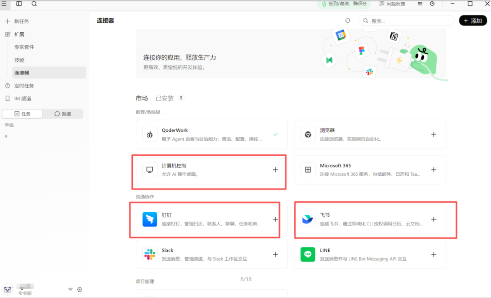
QoderWork 有一个连接器系统，可以对接外部软件。我翻了一下列表，钉钉、飞书、Slack、Microsoft 365、Notion、Figma、Canva、Supabase、Vercel、Linear、Todoist、Google 日历，还在持续增加。
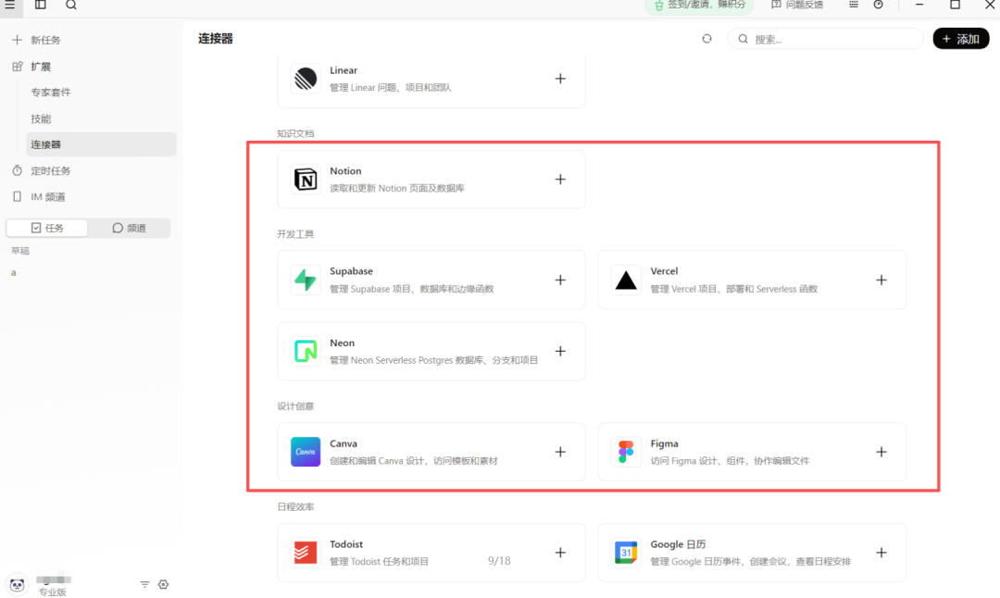
你想想看这件事。你可以让 AI 帮你在钉钉群里自动回复消息，在飞书文档里查数据，在 Notion 里更新知识库，在 Figma 里拉设计稿，在 Canva 里生成封面图。这些操作不需要你手动切窗口去做，QoderWork 通过连接器直接调用对方的 API。
和 CatPaw 的定位差别就出来了
CatPaw 是往 IDE 里塞 AI，它的世界是代码和终端。QoderWork 是往办公桌面里塞 AI，它的世界是钉钉、飞书、Excel 和各种 SaaS 工具。两个产品虽然都免费提供了 GLM-5.2，但要解决的问题完全不一样。
PART 03
给 AI 设个闹钟
定时任务 + IM 频道，人不在也能干活
然后还有一个功能叫定时任务，这个是让我真正觉得有想法的地方。你可以设置 AI 定期自动跑某个任务。比如每天早上 9 点半自动读取最新的 Excel 数据生成日报，每天下午 6 点半自动清理下载文件夹归档整理，工作日中午 12 点半从内容库里随机挑几条推送给你当午间充电，每周一上午 10 点自动追踪 Cursor、Windsurf、GitHub Copilot 的竞品动态。
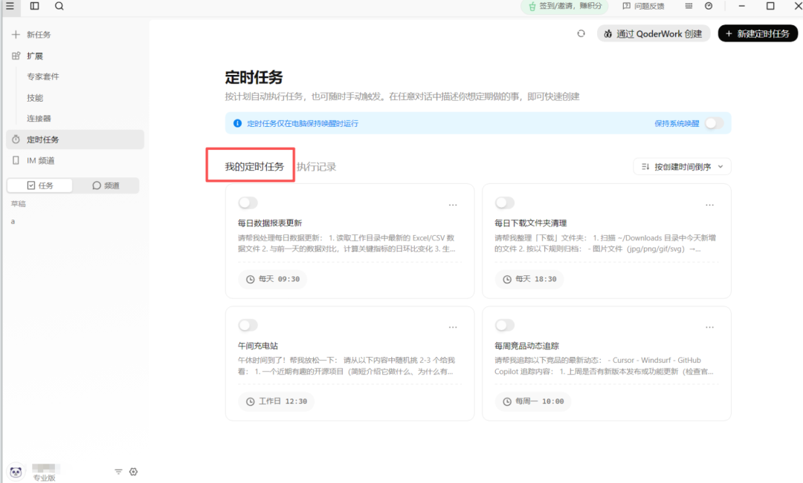
这不就是给 AI 设了个闹钟让它自己干活吗。你人不在电脑前，它按点儿执行。坦率的讲，定时任务这个功能我在其他AI 工具里也见过。ChatGPT，Claude，豆包效果都不怎么好。能自动定时跑任务的，之前只在企业级的自动化平台里见到，比如 Zapier 和 n8n。现在 QoderWork 把这件事做到了桌面端，而且是免费的。
再说 IM 频道。QoderWork 可以直接接收钉钉、飞书、Lark、微信、企业微信的消息，在本地处理后通过机器人回复。这个功能的想象空间很大，你可以搭一个 AI 客服，搭一个团队内部的自动应答机器人，甚至搭一个帮你自动处理群消息摘要的小助手。不用写一行代码，配置一下就行。
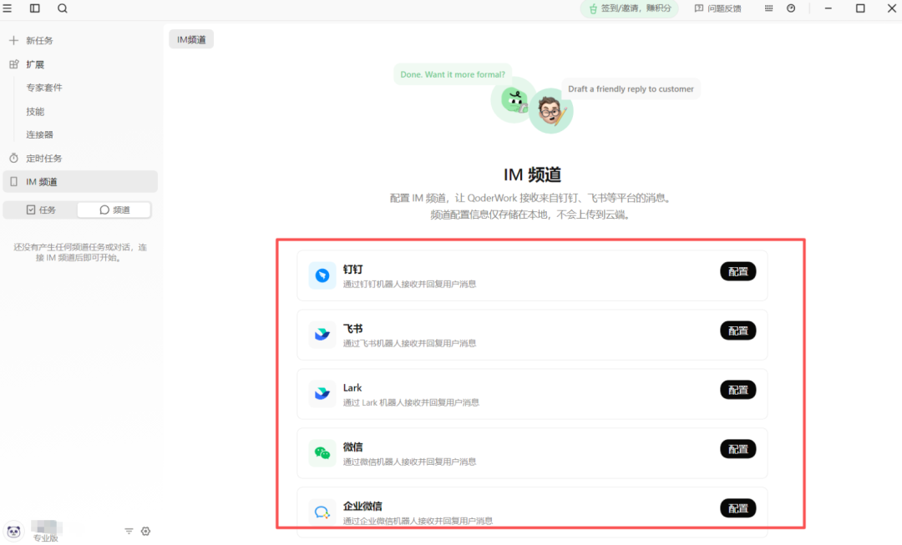
QoderWork 和 CatPaw 虽然都免费提供了 GLM-5.2，面向的人群却完全不同。CatPaw 是给程序员用的编程工具，QoderWork 是给所有职场人用的办公工具。
PART 04
专家套件广场
按行业角色预装技能和数据连接
这个差异最明显的体现是它的专家套件广场。里面按行业和角色分了十几个类目，行政、HR、财务、律师、市场、销售、产研、运营、数据分析、供应链、设计、政务公共。每个套件里预装了几个技能和数据连接，装上就能直接用。
比如合同管理套件，能审查合同风险、起草合同初稿、两版合同红线对比、NDA 快速分诊。咨询交付套件，覆盖桌面调研、访谈纪要、方案框架、报告撰写、标杆对比，从项目周报到 CEO 汇报七个场景。甚至还有 1688 买家助手和商家助手，帮你选品找货、询盘寻源、店铺诊断。
这些套件不是通用的聊天模板。它们带着具体的行业逻辑和工作流程，背后连着真实的数据源和工具链。这种深入到具体岗位的产品设计，是我在其他免费 AI 工具里很少看到的。
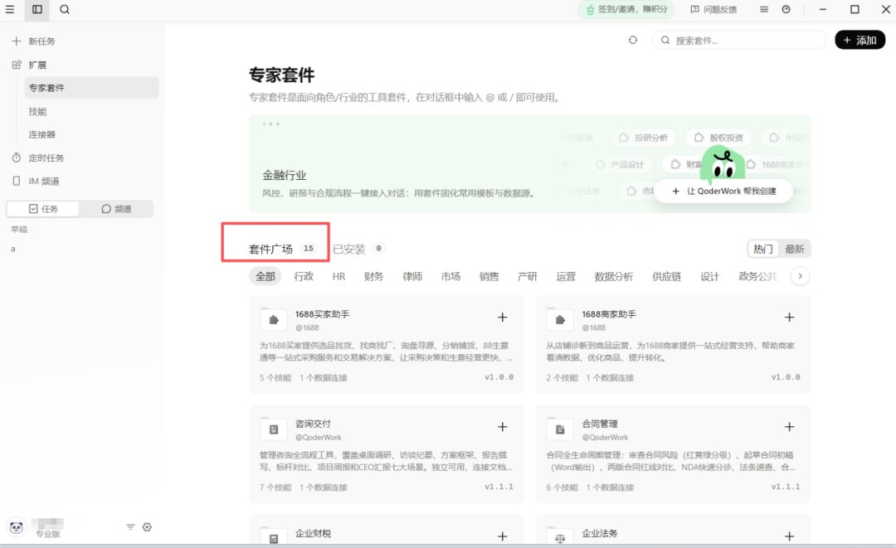
它还内置了一套技能系统，docx、pdf、pptx、xlsx 这些常见文档格式全覆盖。你可以在对话里直接调用这些技能让 AI 生成文件。
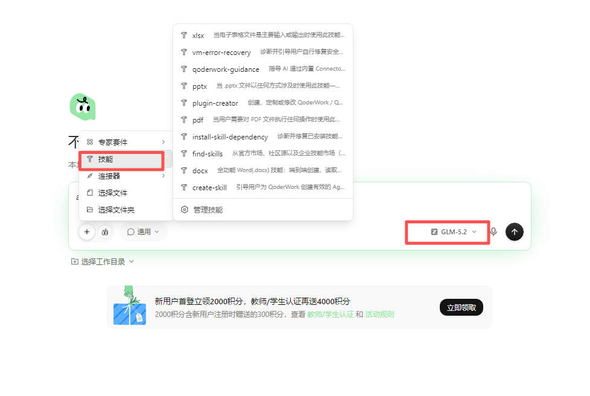
工作模式也分了四种，通用、设计、幻灯片、写作。后两个还在 Beta，但至少说明产品团队在往内容创作方向走。
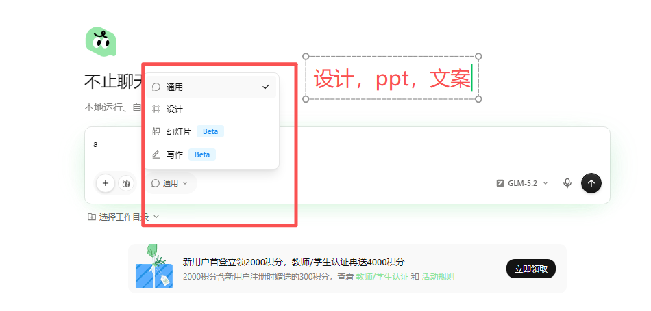
PART 05
软件实测
一个简单问题就吃掉 2% 的套餐额度
但我得说说软件实际测试的情况。
我拿 GLM-5.2 测了一个问题，问它：请介绍下 QoderWork CN 这个软件，到底能解决什么问题。回答质量还行，条理清楚。但是我注意到右上角的用量面板，这一个问题消耗了 4 个积分，吃掉了套餐内 300 积分的 2%，上下文占用了 15%。
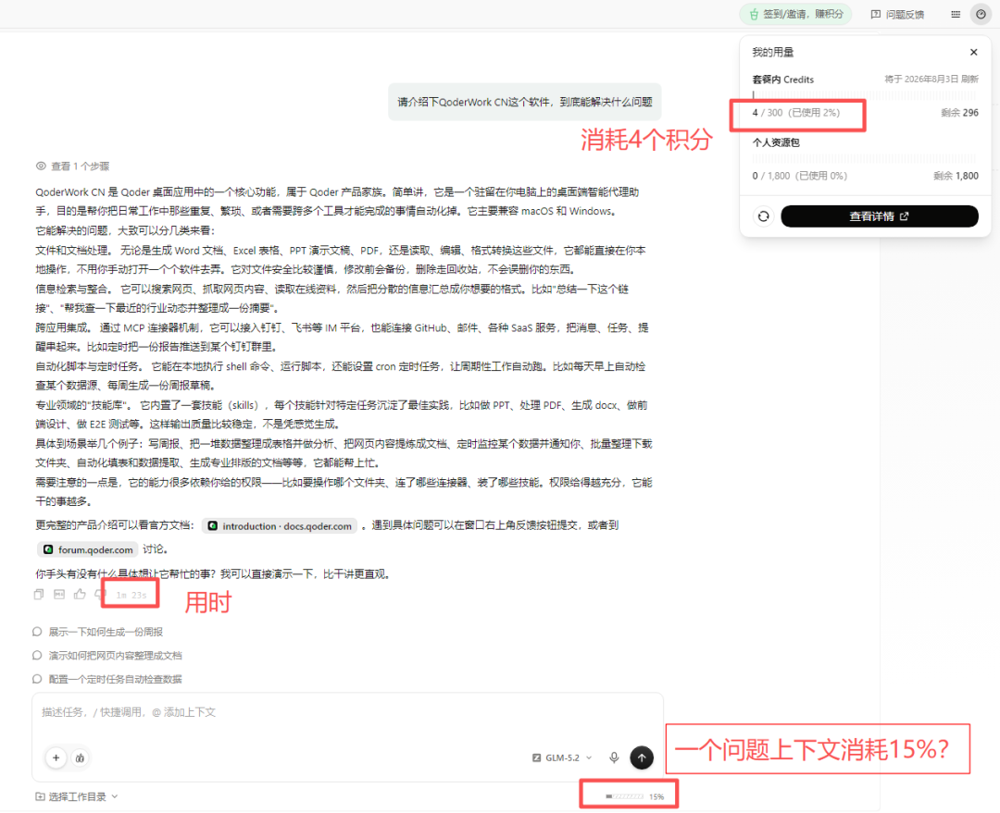
测试的时间是算高峰使用期，一个简单的介绍性问题就花掉 4 个积分。如果你用 GLM-5.2 做复杂任务，比如分析一个长文档或者生成一份带数据图表的 PPT，消耗只会更高。2000 积分听着不少，但按 0.6X 的消耗速度跑 GLM-5.2，大概也就能撑个几百轮对话。如果是高频使用的话，可能很快就见底了。
领取的 2000 积分有效期只有 30 天，从点击领取那天开始算，没用完就作废，不会自动延期。Pro 套餐到期之后，如果不续费 59 块，会降到体验版，功能受限，积分也只有最基础的一点点。积分的消耗优先级是先扣快过期的，设计合理，但也意味着要盯一下用量面板，别到月底才发现积分全过期。
还有一个小细节。GLM-5.2 在 QoderWork 里的消耗倍率是 0.6X，但 Qwen3.7-Plus 只要 0.1X，DeepSeek-V4-Flash 也是 0.1X。同样的积分，用 Qwen3.7-Plus 能跑 6 倍的对话量。所以日常简单任务其实没必要开 GLM-5.2，杀鸡不用牛刀。整理文件、回答简单问题、做格式转换这些，0.1X 的模型足够了。只有遇到真正需要强推理的复杂任务，比如长文档分析、多步骤工程规划、代码级别的问题，再切到 GLM-5.2 或者 DeepSeek-V4-Pro。
我自己的使用策略
默认挂 Qwen3.7-Max，它是阿里自家的模型、消耗只有 0.25X、响应速度也快。遇到啃不动的硬骨头再临时切模型，这样 2000 积分能撑得久一点。
另外手机远程访问这个功能值得单独提一嘴。你在电脑上装好 QoderWork，手机上装一个配套 App，就可以远程给电脑上的 AI 发任务。人不在电脑前的时候，用手机告诉它：帮我把今天的会议纪要整理成邮件草稿，它就在电脑上本地执行了。
写到这我倒是想起一个更大的判断。
美团用 CatPaw 免费送 GLM-5.2 给程序员，阿里用 QoderWork 免费送 GLM-5.2 给职场人。两家大厂几乎同一时间做了同一件事，但面向完全不同的人群。
如果再加上我之前写的 Tabbit（美团的 AI 浏览器，免费送 GPT-5.5），你会发现一个趋势正在成型。大厂们不再只是做模型，也不再只是做聊天机器人。它们在做的是工具+模型的捆绑分发，把顶级模型塞进具体的工作场景里，浏览器、IDE、办公桌面，每一个入口都在争夺用户的使用习惯。
而 GLM-5.2 这个开源模型，正在成为这场入口之争里的通用弹药。因为它足够强、足够便宜、MIT 协议没有限制，谁都可以拿来用。所以美团用它，阿里也用它，以后还会有更多产品把它塞进来。
智谱的策略到这一步就很清楚了。它不跟你争终端用户，它做弹药供应商。模型免费开源，MIT 协议无限制，让所有产品来分发。你用谁家的工具不重要，反正底下跑的都是 GLM-5.2。
这个逻辑跟安卓当年很像
谷歌不靠安卓系统本身赚钱，它靠安卓成为所有手机的底层操作系统之后，用搜索、广告和应用商店变现。智谱也不需要靠 GLM-5.2 的 API 调用费赚大钱，它需要的是让这个模型变成中国 AI 工具生态里的默认选项。一旦所有主流工具里都跑着 GLM-5.2，智谱在这个生态里的话语权就稳了。
写在最后
免费开源一个模型，看起来是放弃了收入。
但如果这个模型成了所有工具的底层标配，那它就成了基础设施。基础设施的价值，从来不是按流量收费算出来的。先装一个跑跑看，反正首月 Pro 不要钱，试错成本为零。